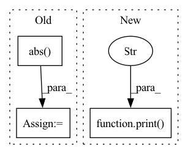

Pattern ID :13281
Before Change
pk = pk1
num_loop = num_loop + 1
rktrk = rk1trk1
rktark = torch.sum(rk.conj()*(A*rk)).abs()
print(f"residual at {num_loop}th iter: {rktark}")
return xk
class CG():After Change
pk = pk1
num_loop = num_loop + 1
rktrk = rk1trk1
print(f"residual at {num_loop}th iter: {rktrk}" )
return xk
class CG():
"""In pattern: SUPERPATTERN
Frequency: 3
Non-data size: 3
Instances Fragment ID: 44789627
Project Name: guanhuaw/mirtorch
Commit Name: f2dd66899abdeb4b2bf589ab01e99426c6d4df9a
Time: 2021-02-16
Author: guanhuaw@quickstep
File Name: alg/cg.py
M Class Name: AnonimousClass
N Class Name: AnonimousClass
M Method Name: cg_block(5)
N Method Name: cg_block(5)
M Parent Class:
N Parent Class:
M File Name: alg/cg.py
N File Name: alg/cg.py
M Start Line: 36
M End Line: 41
N Start Line: 40
N End Line: 40
Before Change
// random distance matrix, in case rdkit errors out
// print("distance embedding failed")
distances_3d = np.random.rand(mol.GetNumAtoms(), mol.GetNumAtoms())
distances_3d = np.abs( distances_3d - distances_3d.transpose())
// Get topological (i.e. path-length) distance matrix and number of atoms
distances_path = Chem.GetDistanceMatrix(mol)
n_atoms = mol.GetNumAtoms()After Change
conformer = mol.GetConformer()
except:
// zero distance matrix, in case rdkit errors out
print("distance embedding failed" )
distances_3d = np.zeros(mol.GetNumAtoms(), mol.GetNumAtoms())
conformer = DummyConformer()
// Get topological (i.e. path-length) distance matrix and number of atoms Fragment ID: 44789626
Project Name: aamini/chemprop
Commit Name: 0000eedf0800c0ae4e7874b2c000fb5f2915eea0
Time: 2018-09-28
Author: yangk@mit.edu
File Name: mpn.py
M Class Name: AnonimousClass
N Class Name: AnonimousClass
M Method Name: mol2graph(2)
N Method Name: mol2graph(2)
M Parent Class:
N Parent Class:
M File Name: mpn.py
N File Name: mpn.py
M Start Line: 154
M End Line: 155
N Start Line: 148
N End Line: 168
Before Change
metric += sklearn_metrics.mean_squared_error(y_true_los, y_pred_los)
elif metrics_strategy == "MAPE":
metric += sklearn_metrics.mean_absolute_percentage_error(y_true_los, y_pred_los)
metric += np.mean(
np.abs( y_true_outcome - y_pred_outcome)
* max_visits
* np.array(list(map(lambda x: sigma_func(x), y_true_los)))
)
if verbose:After Change
)
result = np.array(metric)
if verbose:
print("Early Prediction Score:" , result)
return result.mean(axis=0)
Fragment ID: 44789625
Project Name: yhzhu99/covid-ehr-benchmarks
Commit Name: fc9fcafdeae37b009acb4acf87682f0d86306e69
Time: 2022-06-29
Author: yhzhu99@gmail.com
File Name: app/core/evaluation/covid_metrics.py
M Class Name: AnonimousClass
N Class Name: AnonimousClass
M Method Name: multitask_los_metric(6)
N Method Name: multitask_los_metric(7)
M Parent Class:
N Parent Class:
M File Name: app/core/evaluation/covid_metrics.py
N File Name: app/core/evaluation/covid_metrics.py
M Start Line: 83
M End Line: 116
N Start Line: 119
N End Line: 142